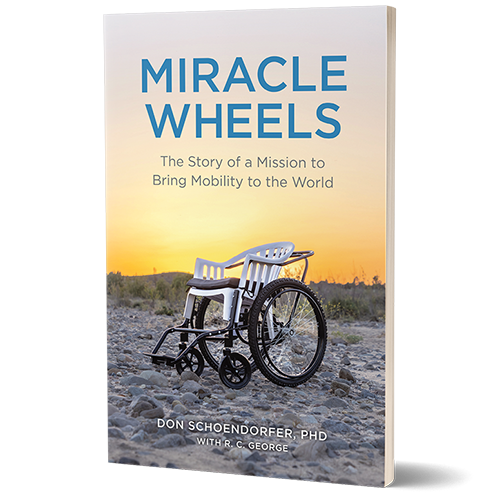

some of our book
- MIRACLE WHEELS 
- ALL THE GOLD STAR
- SACRED STORY
DON SCHOENDORFER
Don Schoendorfer is a biomedical engineer who makes his home in Santa Ana, California. He has an
undergraduate degree from Columbia University and a PhD in mechanical engineering from MIT. He holds
more than 60 patents in the biomedical field.

RAINESFORD STAUFFER
Rainesford Stauffer is an author, journalist, speaker, and Kentuckian. She's the Work in Progress columnist for Teen Vogue, and wrote a column for Catapult, Gold Stars. Her work has also appeared in The New York Times, Scalawag, DAME Magazine, Vox, and other publications.

MARILYN Mc Farlane
Marilyn McFarlane has spent her career writing about far-off lands as a travel writer. Her devout Presbyterian upbringing combined with her passion for international travel led to an early interest in world religions. Today, her adventures often lead to sacred sites like the Hindu temples in India or the Great Mosque in Morocco. When she’s not traveling the globe, McFarlane lives with her husband, two cats, and many books in Portland, Oregon.